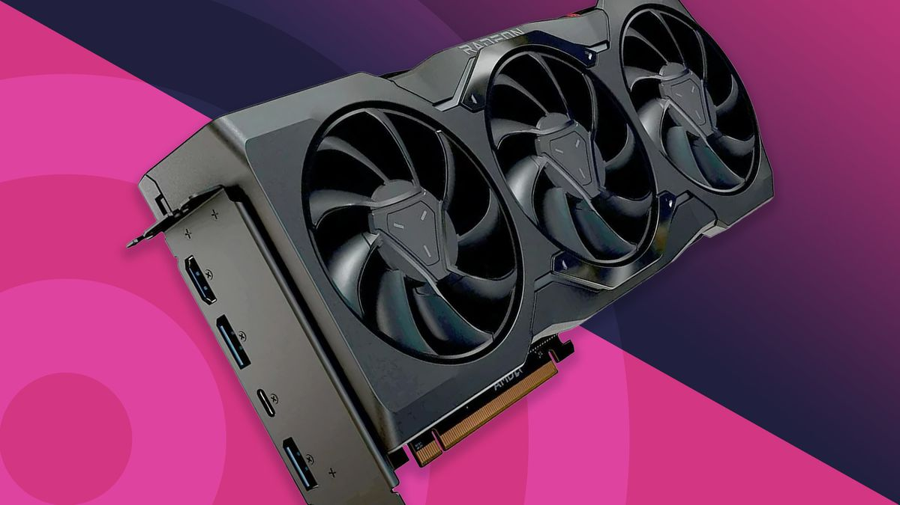
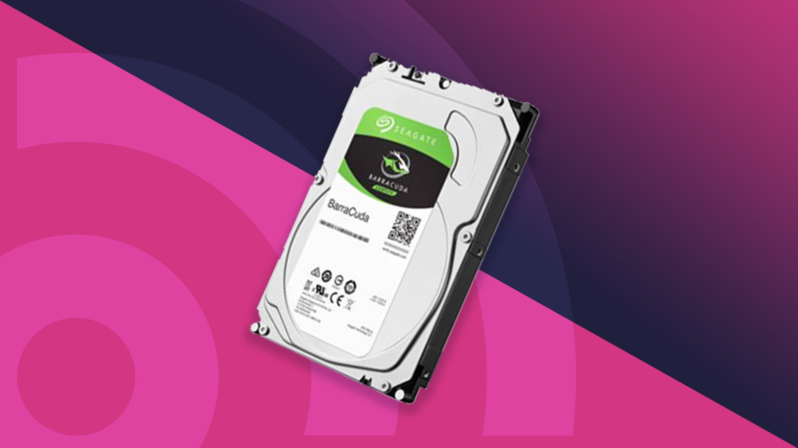
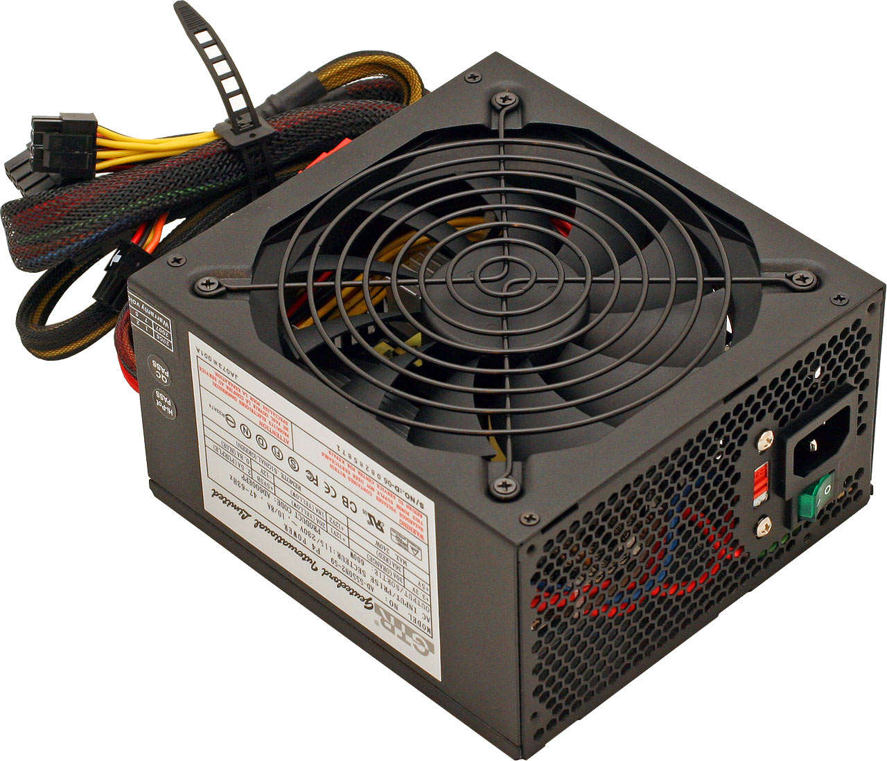

WELCOME TO IWB
The mandate of IWB is to recycle computer parts; mainly the RAM, Hard Drives and
Components of a motherboard. Recycling computer components offer a variety of benefits. The most important on a global scale is keeping toxic substances found in electronics out of landfills. Responsible recycling also helps prevent identity theft since recycling through appropriate channels also ensures your personal information is wiped safely from the machine. It also allows you to remain compliant as more electronic waste legislation is passed at local and state levels.
PC COMPONENTS WE RECYCLE
|  |
 |
 |
 |
 |
GRAPHICS CARDS |
MOTHERBOARDS |
HARDDRIVES |
RAMS |
POWER SUPPLY |
Designed by Mpolokeng